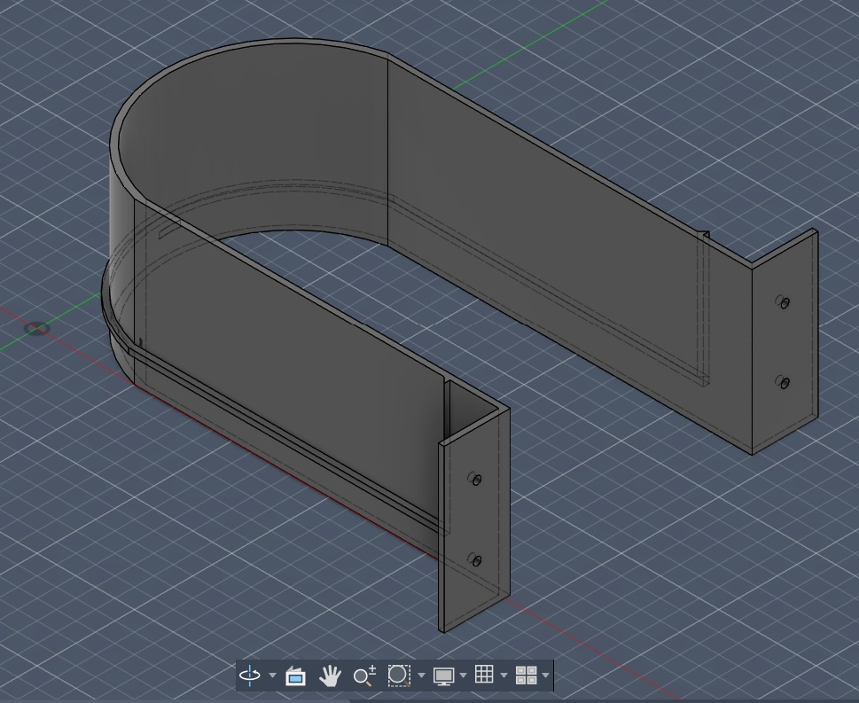
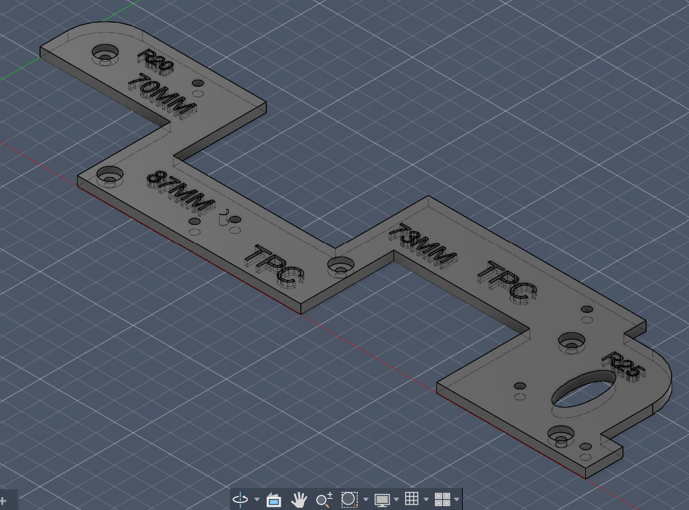
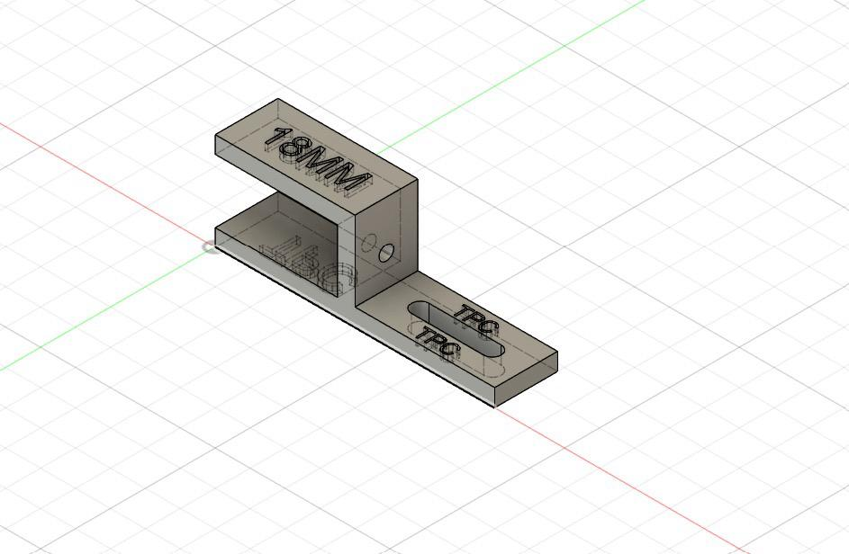
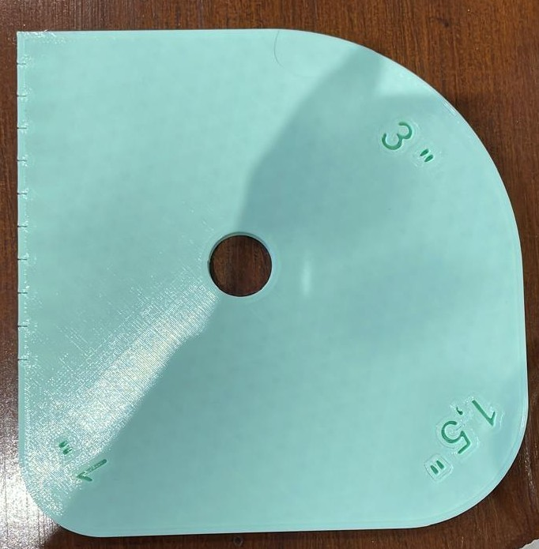
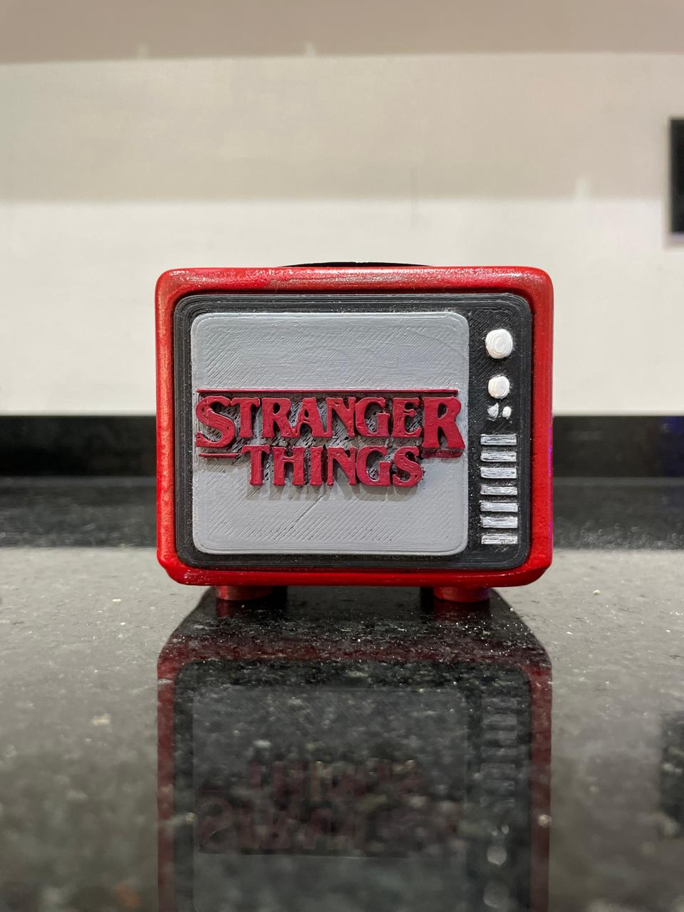
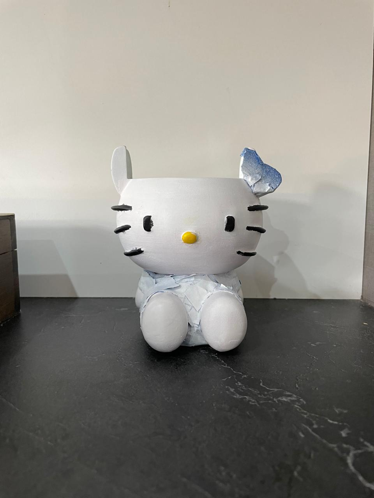

Mis trabajos
Portafolio
Una selección de proyectos que combinan análisis funcional, diseño de sistemas y modelado 3D.
Sistema de Stock — Ajuste Masivo
Prototipo interactivo del módulo de ajustes masivos via Excel para el sistema mi3F de la Municipalidad de Tres de Febrero.
Sistema de Stock — Detalle de Ingreso
Prototipo del módulo de edición de ingresos con modal de confirmación, simulación de roles y control de diferencias.
Gestor Documental Sincronizado
Prototipo de sincronización entre el Sistema de Expedientes y el Gestor Documental, con flujo completo de creación y firma de documentos.

Herramientas 3DFondo de cajón
Accesorio para organización de cajones de carpintería, diseñado a medida en Fusion 360.

Herramientas 3DPlantilla Gola
Plantilla de referencia para carpintería con medidas grabadas, diseñada para marcar y verificar golas de distintos tamaños. Réplica exacta de....

Herramientas 3DU-Scribe 18mm
Marcador de líneas para tableros de 18mm, diseñado e impreso con medidas grabadas para uso profesional en carpintería.
Separador de cajones
Accesorio para organización de cajones de carpintería, diseñado a medida. Vienen en 18mm con un ancho de 3mm, en 18mm con un ancho de 2mm y en 15mm con un ancho de 3mm

Diseño 3DRegla curva para costura
Herramienta de medición con curvas y escalas grabadas, diseñada para proyectos de costura y patronaje.

Diseño 3DMate Stranger Things
Mate funcional con forma de televisor retro temático de Stranger Things, impreso en un color base, lijado y pintado a mano para lograr el acabado final.

Diseño 3DMate Hello Kitty
Mate funcional con forma de Hello Kitty, impreso en un color base, lijado y pintado a mano para lograr el acabado final.